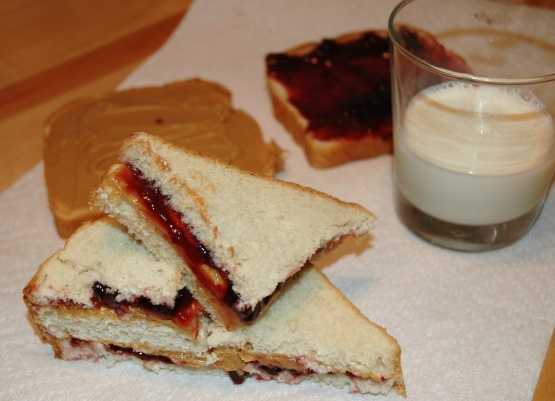

Traditional PB&J sandwich

Description
A simple sandwich which can be made with either smooth peanut butter or crunchy peanut butter. Classically, the jelly used is either strawberry or grape.
Ingredients
- 2 slices sandwich bread
- 2 tablespoons peanut butter
- 2 teaspoons grape jelly or 2 teaspoons strawberry jam
Steps
- Spread the peanut butter on one piece of bread.
- Spread the jelly on the other side.
- Put the two pieces of bread together to form a sandwich.
Toddler adaptation: cut off crusts before serving.